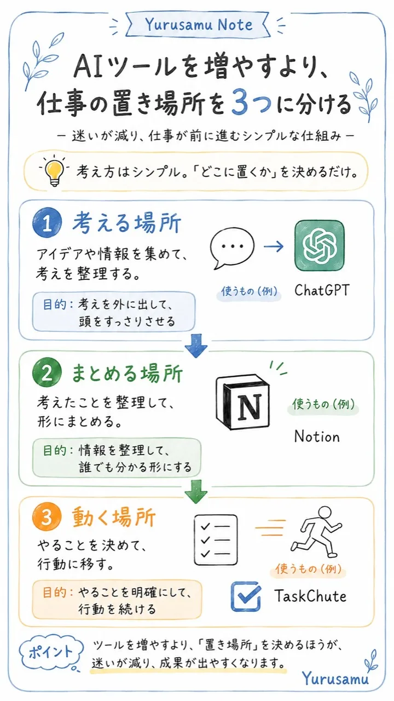

Yurusamu Note
AIツールを増やすより、
仕事の置き場所を3つに分ける

AIを使い始めると、つい「どのAIが一番すごいか」を探しがちです。
でも、実際に効いてくるのは、ツール選びよりも仕事の流れを分けることでした。
ひとつの場所に、相談も、メモも、やることも全部集めてしまうと、頭の中まで混線しやすくなります。
先に置き場所を分けておくと、AIは「考えるための道具」として、ずっと扱いやすくなります。
1. 相談する場所
まずは、考えを壁打ちする場所を1つ決める。
例：ChatGPTに、迷っていること・判断したいこと・次にやることを相談する。
2. 置いておく場所
すぐ整理しようとせず、素材をいったん置く場所を作る。
例：気づき、調査メモ、AIとの対話、記事ネタをNotionに入れておく。
3. 実行する場所
やることは、考える場所から切り離して実行に移す。
例：今日やることは、タスク管理や時間管理の場所へ送る。
Takeaway
AI活用で大事なのは、
「AIを増やすこと」ではなく、
相談・保管・実行の置き場所を分けること。
AIは目的ではなく、
自分の考える力を早く形にするための加速装置。